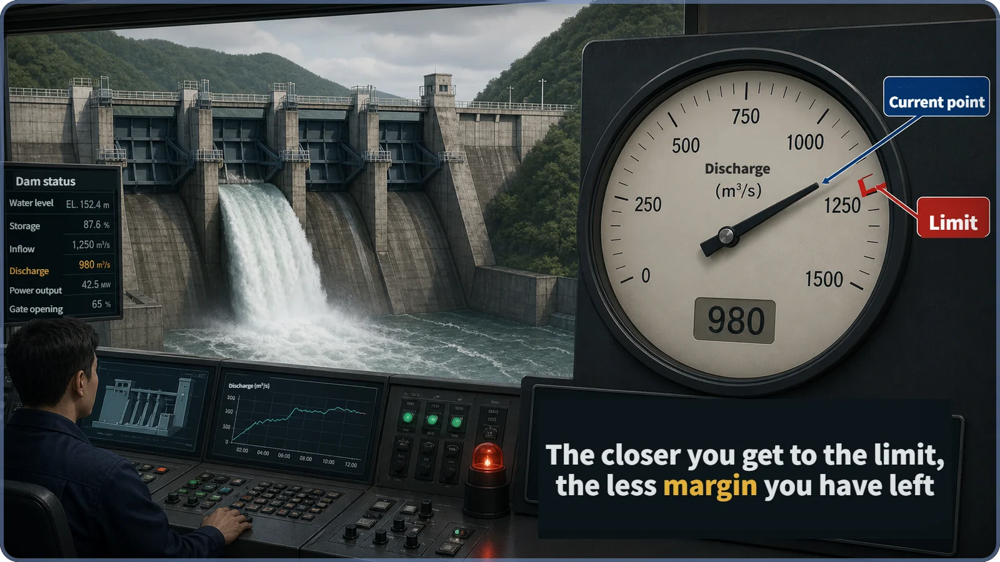
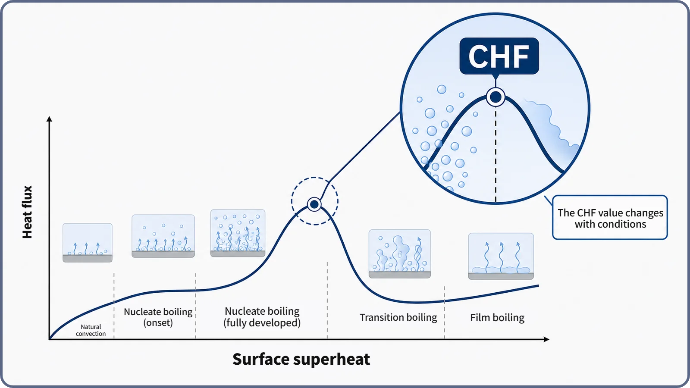

Heat Transfer & Thermal Hydraulics · 136
When the Dam Gauge Creeps Toward the Red Line — What Critical Heat Flux (CHF) Really Means
The peak of the boiling curve is the highest heat flux nucleate boiling can sustain, a threshold rather than an accident, and the margin to it shapes reactor design and operation.
Critical heat flux (CHF) is the maximum heat flux at which nucleate boiling can be sustained: the peak of the boiling curve, beyond which a surface slides into far less effective film boiling. The word "critical" marks a qualitative threshold, not danger, and has nothing to do with reactor criticality. Because CHF changes with pressure, flow and other local conditions, it is estimated with correlations, and plants keep the margin to it, measured by DNBR and MDNBR, under constant watch.
One peak with a name
On the boiling curve we looked at earlier, heat flux climbs steeply, suddenly peaks, and then gives way to a far more troublesome region. That peak, where nucleate boiling gives way to film boiling, has a name of its own: critical heat flux (CHF). Rather than redraw the whole curve, let's focus on that one point: why it is called "critical," and why reactor designers and operators guard this line so carefully.
Even a dam can only pass so much water
Picture a dam control room. An operator watches the discharge meter for the spillway gates, which were designed with a fixed maximum discharge capacity. Within that capacity, the downstream water level and the load on the dam stay under control; raise the release and the needle just moves a little to the right.
But as the needle nears the red limit line, the operator tenses up. The dam doesn't collapse the instant the line is crossed, yet beyond what the spillway can handle the story changes character: from "releasing a lot of water" to "water overflowing out of control."

The name of that peak: critical heat flux
Heat flux (the heat leaving a surface per unit area) follows the same pattern. As surface superheat rises, heat flux in the nucleate boiling region grows steadily, even steeply. But once that rise peaks, the surface becomes blanketed by a vapor film as it moves into film boiling, and heat transfer changes character altogether.
The heat flux at that peak is what we call critical heat flux (CHF). In one sentence: CHF is the maximum heat flux at which nucleate boiling can be sustained. Like the dam's limit line, CHF itself is not the moment of an accident or damage; nothing breaks the instant it is exceeded. The point is that beyond it the way heat is carried away switches to film boiling, so while the same heat keeps being produced, its escape route suddenly narrows.
"Critical," but not the reactor kind of critical
Hearing "critical," many people think of a reactor "going critical." These are entirely different ideas. In reactor physics, "critical" means the neutron multiplication factor is exactly 1, so the fission chain reaction stays steady over time. The "critical" in critical heat flux simply marks the threshold where the mode of heat transfer changes abruptly. One belongs to neutron physics, the other to thermal hydraulics. The shared word (criticality versus critical heat flux) makes them easy to confuse, but here "critical" means only the heat-flux threshold.
Zooming in on the peak
Let's pull in close on just the peak.

Up close, CHF is a point under particular conditions. The pressure, the coolant flow rate, whether the coolant near the surface is still mostly liquid or already full of vapor, and the shape of the flow channel all shift where the peak sits. So engineers don't memorize CHF as one number; they use experiment-based formulas (CHF correlations) that estimate it for each local condition. No single W/m² figure is quoted here, because the value differs by reactor type, design, position in the core and operating conditions.
CHF, DNB and dryout: similar, but not identical
CHF and departure from nucleate boiling (DNB) are often used almost as synonyms. More precisely, CHF is the umbrella name for "nucleate boiling breaking down," with two routes inside it.
When nucleate boiling suddenly breaks down while the coolant is still largely liquid or carries only a little vapor, that is DNB in the narrow sense. When much of the coolant has already turned to steam and the thin liquid film wetting the surface gradually dries out, it is called dryout. Pressurized water reactors (PWRs) generally operate at low steam fractions, so DNB is discussed more often; boiling water reactors (BWRs) have high steam fractions toward the top of the core, so dryout comes up more often. (This is the common textbook distinction; design documents don't always separate the terms strictly.) Either way the result is the same: nucleate boiling can't be sustained and heat transfer drops off sharply.
Crossing CHF was once called "burnout," which wrongly suggests the fuel burns up on the spot. Exceeding CHF raises the risk of a rapid surface-temperature rise; it doesn't mean immediate fuel damage, so descriptive names like CHF or DNB are preferred today.
A scale for margin: DNBR and MDNBR
How close does actual operation come to CHF? That is measured by the DNBR (departure from nucleate boiling ratio).
DNBR = (CHF under the conditions at that spot) ÷ (actual heat flux at that spot)
A DNBR of 1 means the heat flux has reached CHF exactly; the further above 1, the more room is left. A core has tens of thousands of such spots, each with its own DNBR. The lowest one, the spot closest to CHF, is the MDNBR (minimum DNBR), and plants keep this minimum comfortably above a set criterion. What was called "thermal margin" earlier is exactly how far the MDNBR sits above that criterion.
Why plants guard this line so carefully
Reactor designers and operators protect CHF in several layers. At the design stage, DNBR is calculated in advance for every location in the core, covering not only normal operation but also anticipated operational occurrences, and the fuel loading, power distribution and operating ranges for coolant flow, temperature and pressure are set so the minimum (MDNBR) stays at or above the criterion. The specific regulatory numbers differ by regulator, reactor type and correlation, so none are given here. In operation, the reactor protection system continuously evaluates core conditions such as power, flow, temperature and pressure; as thermal margin approaches its set limit it raises alarms and, if needed, automatically reduces power or shuts the reactor down. Whether it computes DNBR directly or watches an equivalent surrogate variable depends on the design.
So CHF is where big design and operating decisions converge: how high core power can go, how much coolant flow must be guaranteed, how quickly safety systems must respond in an accident, much as a spillway's limit shapes how the whole dam is run.
Two common misconceptions
"CHF is a dangerous accident point." No. It is a threshold, and "critical" means a qualitative change, not "danger." Getting from exceeding CHF to actual fuel damage takes further conditions, such as how large the temperature rise is and how long it lasts.
"CHF is one number that's the same everywhere." No. It varies with pressure, flow rate, subcooling or steam quality and channel geometry, and differs from place to place within one core, so it is calculated case by case with correlations.
The short version
- CHF is the maximum heat flux at which nucleate boiling can be sustained, the peak separating nucleate from film boiling.
- "Critical" means a qualitative threshold, not "danger," and has nothing to do with reactor criticality.
- CHF depends on conditions, so it is estimated with correlations.
- DNB (low steam quality) and dryout (high steam quality) are two routes to the same outcome: loss of nucleate boiling.
- DNBR tracks how close operation is to CHF, MDNBR marks the most limiting spot, and protecting that thermal margin is a central goal of reactor design and operation.
Whether it's the needle in a dam control room or the heat flux in a reactor core, safety starts with knowing exactly where the line is.